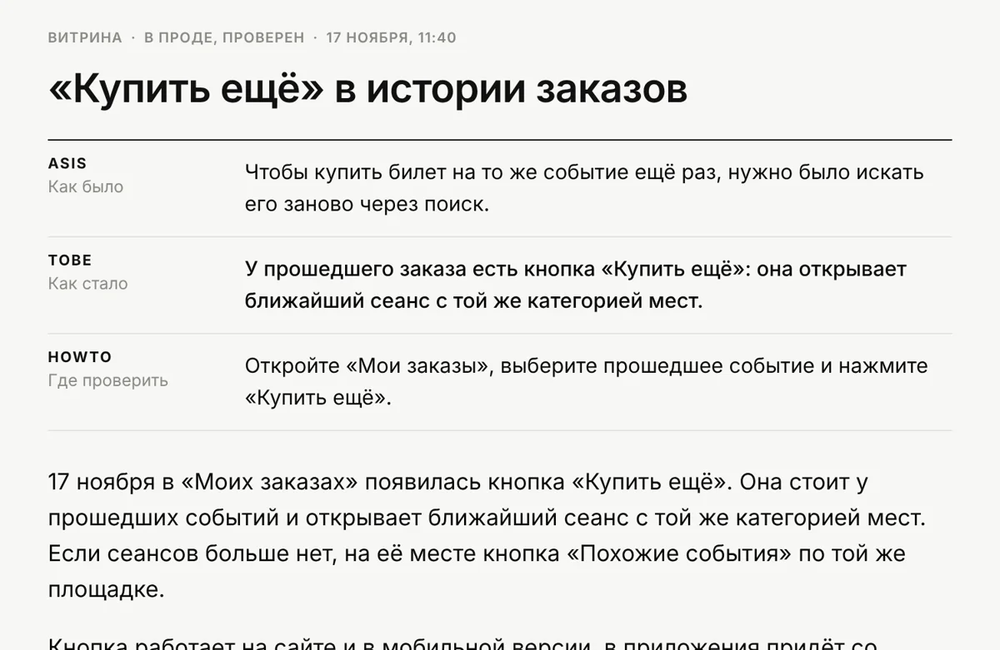
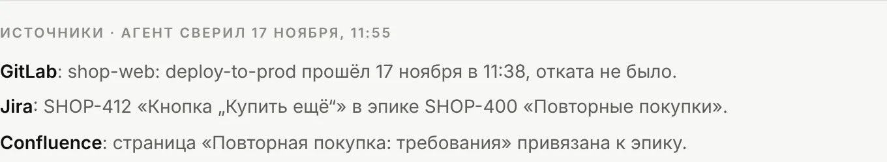
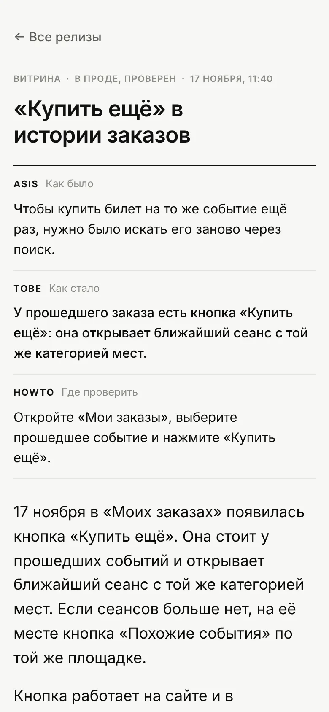
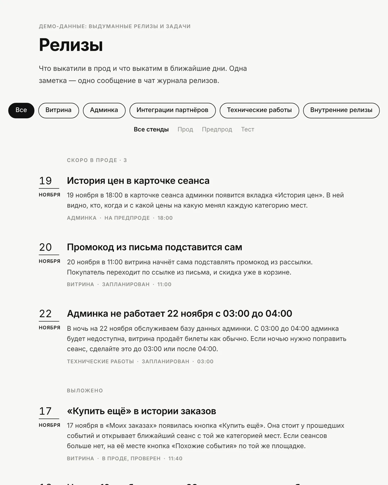

ОТЧЁТЫ PO · ЖУРНАЛ ВЫКЛАДОК В ПРОД
Релизы: факт отгрузки,
а не статус в Jira
Каждая выкладка в прод становится короткой заметкой: что было, что стало, где проверить и на каких данных это основано.
Задачу закрываю, когда вижу её в проде,
а не когда мне сказали «готово».
Проблема
«Готово» ещё не значит «в проде»
Статус задачи говорит, что работа сделана. Прод говорит, что она отгружена. Между ними — ручная кнопка, ночное окно и забытый пайплайн.
Почему статус обманывает
Трекер знает про код, а не про прод
«Готово» — это мердж
Задача закрывается, когда код влит. Выкладка — отдельный шаг, и в трекере его не видно.
Выкладка — ручная кнопка
Сборка прошла тест и ждёт запуска на прод. Иногда днями, иногда до следующего релиза.
Трекер отстаёт от прода
Бывает и наоборот: шаг уже в проде, а задача в бэклоге. Строить отчёт на статусе нельзя.
Никто не пишет, что поменялось
Поддержка и маркетинг узнают о новой кнопке от пользователей, а не от команды.
Что даёт журнал релизов
Три гарантии вместо «вроде выкатили»
Доработка отгружена
Сигнал берётся из системы выкладки: какой сервис, когда, какой коммит, был ли откат. Не со слов и не из статуса.
Задачу можно закрывать
Задачи и эпик находятся по коммитам выкладки. Закрываю их по факту на проде, а не по ощущению.
Работа команды подтверждена
Лента отгруженного — то, что видят бизнес, поддержка и маркетинг. Сделанное не теряется в трекере.
Одна заметка — один релиз и одно сообщение в чат журнала релизов.
Как это устроено
Данные собирает скрипт, текст пишет агент
1 · Сбор — детерминированно
2 · Текст — ИИ-агент
3 · Приёмка — правилами
Заметка
Сначала — как было, как стало, где проверить
- Три строки сверху отвечают на главный вопрос: что поменялось для пользователя.
- «Где проверить» начинается с действия — открыть и убедиться самому за минуту.
- Ниже 1–3 абзаца связного текста и скриншоты, без служебного языка.
- Текст копируется в чат как есть: одна заметка — одно сообщение.

Демо-данные: выдуманный релиз
На чём основан статус
Внизу каждой заметки — источники

Запланирован
сборка есть, на стенды не ушла
На предпроде
тест пройден, прод ждёт кнопки
В проде
выкладка прошла, отката нет
Проверен
сценарий подтверждён на проде
Статус выводится из данных выкладки. Повтор прежнего коммита на проде — это откат, и заметка помечается красным.
Лента релизов
Всё отгруженное — одной лентой по контурам


Сверху контуры влияния · «Скоро в проде» и «Выложено» · демо-данные
Почему этому можно верить
Модель меняет слова, но не факты
Одинаковые данные дают одинаковые поля заметки. Ошибся агент — правило вернёт текст ему же, в ту же задачу.
Где это живёт
Отдельный модуль — виджет и вкладка отчётов
Виджет в мессенджере
«Релизы» добавляются в любую комнату через менеджер расширений. Ссылка на заметку открывает её сразу.
Вкладка в отчётах спринта
Рядом с блокерами, спринтом и бизнес-отчётом. Вход один, тот же, что у отчётов.
Свой репозиторий
Сбор, агент, приёмка и экран развиваются отдельно и выкладываются без риска для остальных отчётов.
Что дальше
Три шага до журнала без ручной работы
- Сбор и приёмка без агентавыкладки, задачи, документы, проверка и публикация; проверено на пяти последних релизах
- Агент «Летописец релизов»получает задачу на доске с пакетом данных и сдаёт только текст
- Наружуподтверждение руководителя, сообщение в чат журнала релизов, пост в ленте событий
Граница честная: релиз виден, пока его выкладка видна в системе выкладки. Что выкатывают вручную мимо неё, журнал пока не увидит.
Итог
Закрываем задачи по факту отгрузки
Журнал релизов отвечает на три вопроса без созвона: что выкатили, когда и как в этом убедиться.
github.com/po-helper-org/poh-widget-releases 🔒